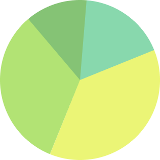

양파 실험에 대해 아시나요?
양파 실험은 “ 좋은 말 나쁜 말 양파 실험” 이라는 이름으로 불리기도 합니다. 양파를 기를 때 한 쪽 양파에는 “사랑해”, “고마워”, ”미안해”와 같은 좋은 말들을 해주고 , 다른 쪽 양파에는 “너 싫어”, “바보”, “멍청이” 와 같은 부정적인 말들을 해 주며 기릅니다. 이후 양파가 다 자랐을 때를 비교하는데, 이 때 좋고 긍정적인 말들을 해 준 양파는 크게 자라고 나쁜 말과 같은 부정적인 말들을 해 준 양파는 작게 자란 것을 확인할 수 있습니다다. 이 실험을 통해 우리는 말에는 힘이 있다는 사실을 다시금 깨닫게 됩니다.
한국인의 욕설 사용 정도는 얼마나 될까요?
2020년 국립국어원에서 실시한 국민의 언어 의식 조사보고서에 따르면,일상 생활 속 욕설 사용에 대해 묻는 문답에서 우리 국민의 46.9%가 욕설을 사용하는 것으로 나타났습니다. 이는 우리 국민 10명 중 5명이 욕설을 사용하는 것입니다.
넌 당근같은 옥수수감자야는